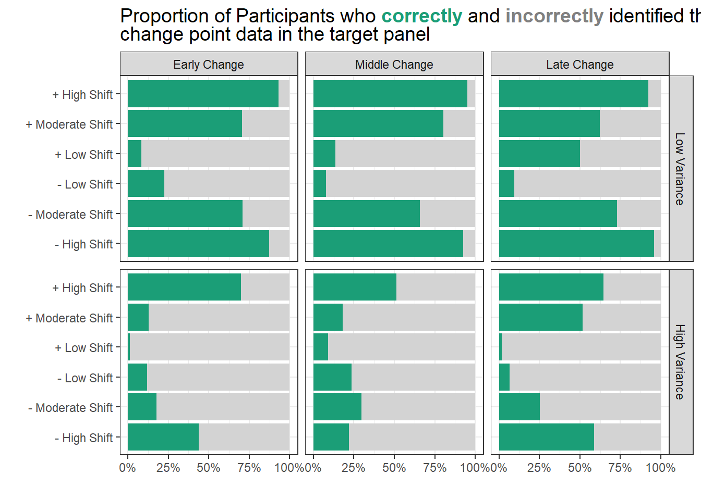
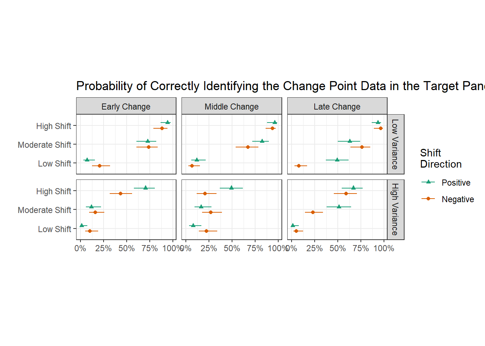
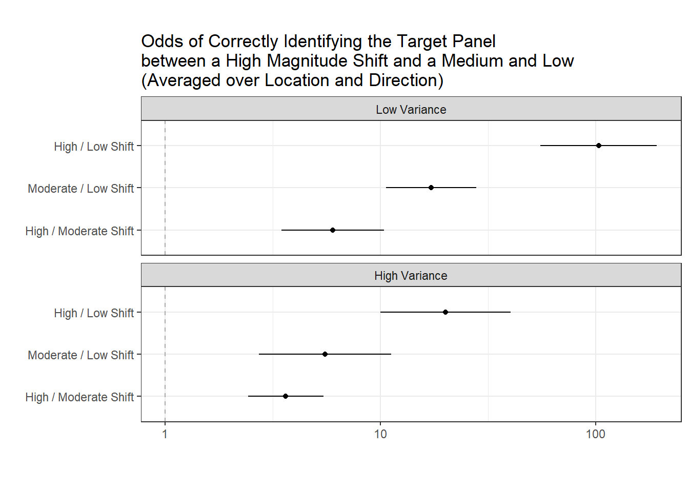
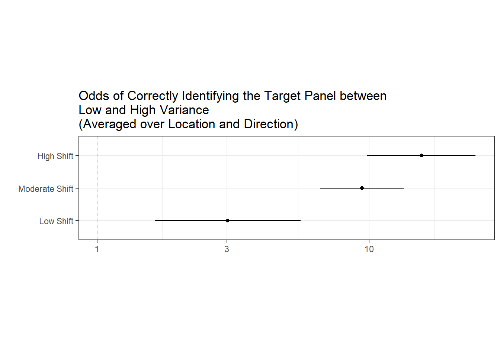
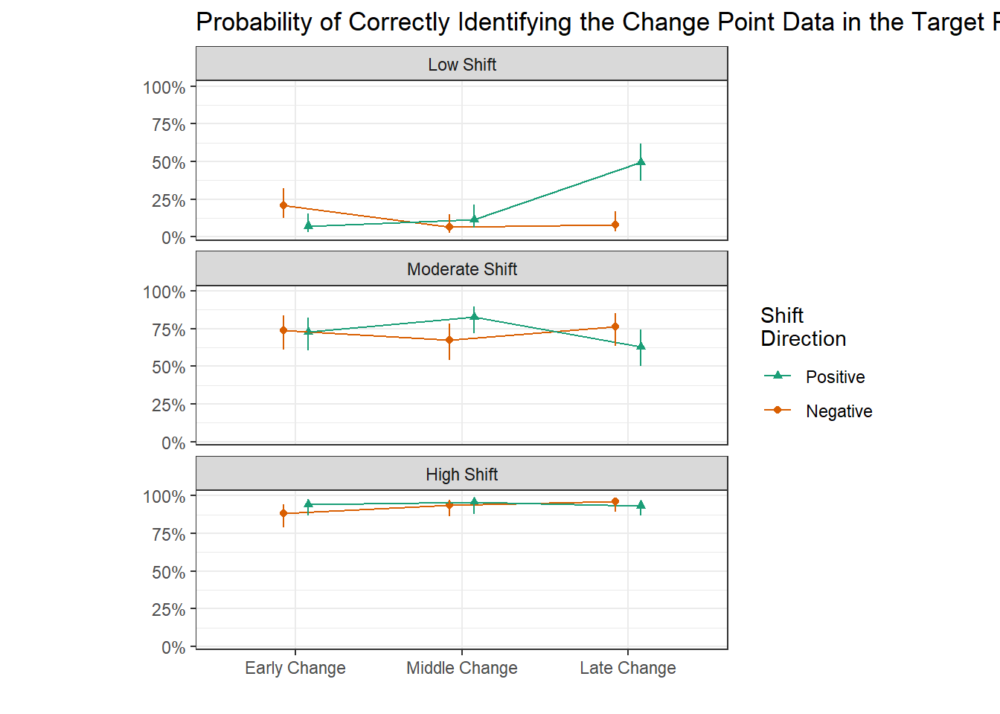
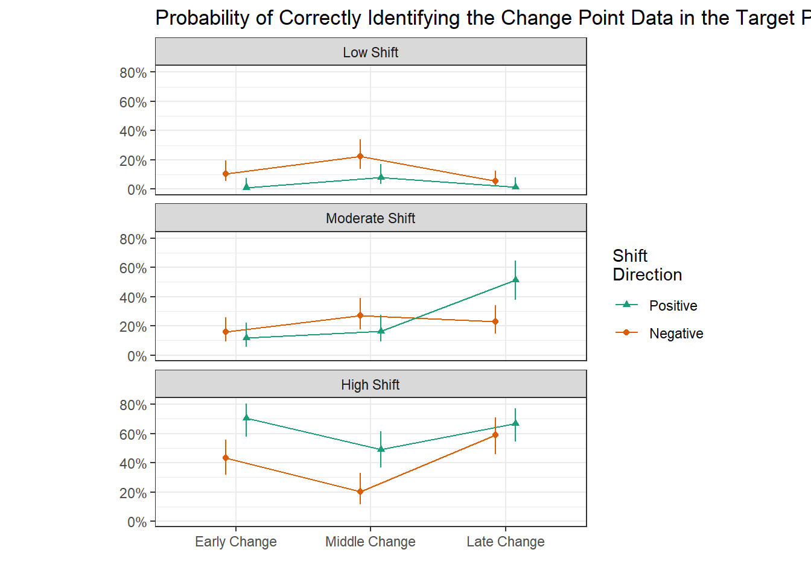
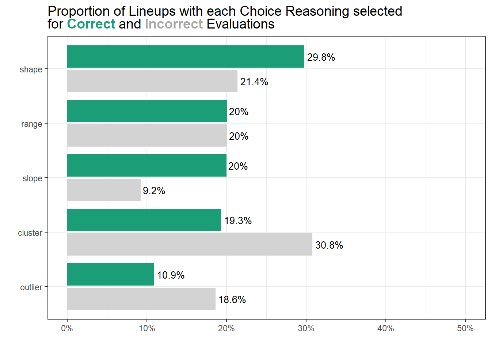
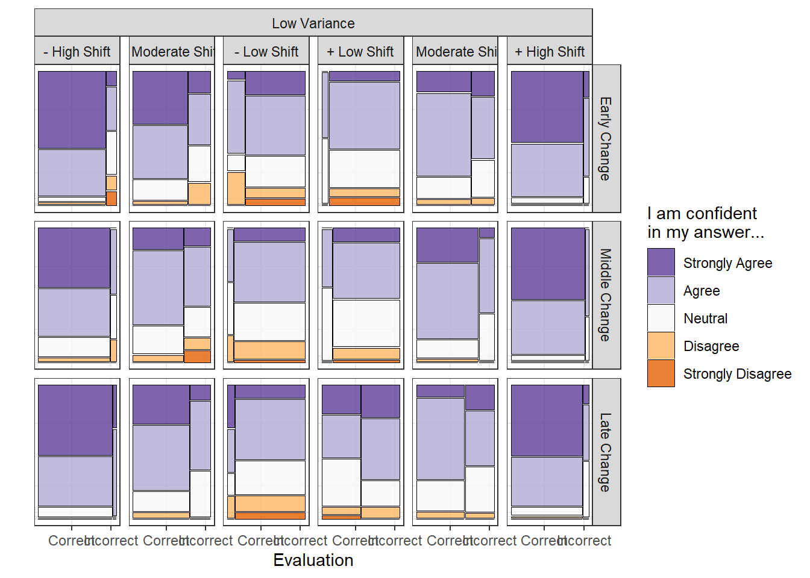
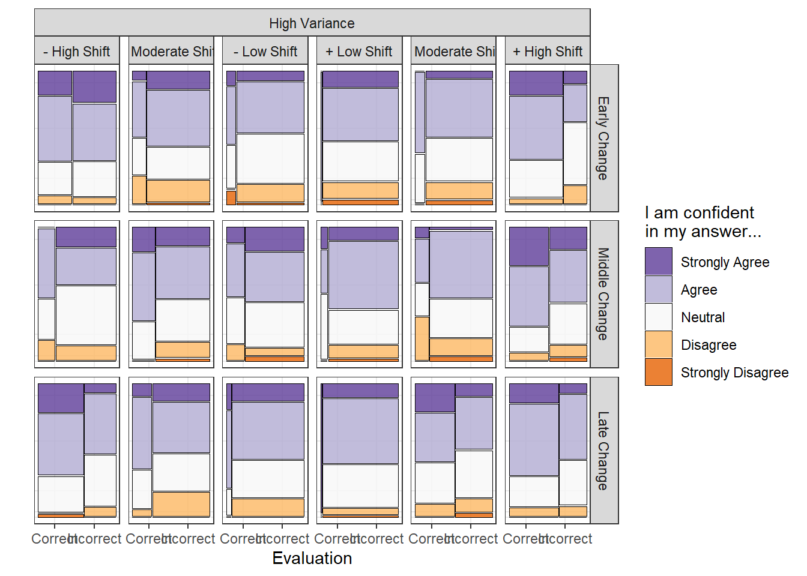

library(here)
library(tidyverse)
library(ggtext)
library(DT)
library(yardstick)
library(caret)
library(tigerstats)
library(ggh4x)Manuscript Analysis
Can You See The Change? Change Point Detection Using Visual Inference
Read in Participant Data
all_data_clean <- read_csv("changepoint-lineup-participant-data.csv") |>
mutate(across(lineup_id:version, ~ as.factor(.x)),
direction = fct_relevel(direction, c("Positive", "Negative"))
)# labellers for plotting
sigma_level <- c(
"1" = "Low Variance",
"2" = "High Variance"
)
cploc_level <- c(
"0.333333333" = "Early Change",
"0.5" = "Middle Change",
"0.666666667" = "Late Change"
)
theta_level <- c(
"-5" = "- High Shift",
"-3" = "- Moderate Shift",
"-1" = "- Low Shift",
"5" = "+ High Shift",
"3" = "+ Moderate Shift",
"1" = "+ Low Shift"
)
theta_level2 <- c(
"5" = "High Shift",
"3" = "Moderate Shift",
"1" = "Low Shift"
)
correct_level <- c(
"0" = "Incorrect Target Identification",
"1" = "Correct Target Identification"
)Participant Demographics
Age
all_data_clean |>
count(age) |>
mutate(n = n/12, #accounting for 12 responses from each person.
percent=n/sum(n)*100)# A tibble: 11 × 3
age n percent
<chr> <dbl> <dbl>
1 19-25 126 60
2 26-30 50 23.8
3 31-35 8 3.81
4 36-40 8 3.81
5 41-45 2 0.952
6 46-50 5 2.38
7 51-55 3 1.43
8 56-60 1 0.476
9 Over 60 2 0.952
10 Under 19 2 0.952
11 <NA> 3 1.43 Gender
all_data_clean |>
count(gender) |>
mutate(n = n/12, #accounting for 12 responses from each person.
percent=n/sum(n)*100)# A tibble: 5 × 3
gender n percent
<chr> <dbl> <dbl>
1 Female 77 36.7
2 Male 127 60.5
3 Prefer not to answer 1 0.476
4 Variant/Nonconforming 2 0.952
5 <NA> 3 1.43 Educational Attainment
all_data_clean |>
count(academic_study) |>
mutate(n = n/12, #accounting for 12 responses from each person.
percent=n/sum(n)*100)# A tibble: 7 × 3
academic_study n percent
<chr> <dbl> <dbl>
1 Graduate Degree 66 31.4
2 High School or Less 29 13.8
3 Prefer not to answer 3 1.43
4 Some Graduate Courses 21 10
5 Some Undergraduate Courses 32 15.2
6 Undergraduate Degree 52 24.8
7 <NA> 7 3.33Binomial GLMM
| Source of Variation | Degrees of Freedom (2520 - 1) = 2519 |
|---|---|
| participant_id | (210 - 1) = 209 |
| theta | (3 - 1) = 5 |
| direction | (2 - 1) = 1 |
| cpLoc | (3 - 1) = 2 |
| sigma | (2 - 1) = 1 |
| theta x direction | (3 - 1)(2 - 1) = 2 |
| theta x cpLoc | (3 - 1)(3 - 1) = 4 |
| theta x sigma | (3 - 1)(2 - 1) = 2 |
| direction x cpLoc | (3 - 1)(3 - 1) = 4 |
| directionigma | (3 - 1)(2 - 1) = 2 |
| cpLoc x sigma | (3 - 1)(2 - 1) = 2 |
| theta x cpLoc x sigma | (6 - 1)(3 - 1)(2 - 1) = 10 |
| participant_id x theta x cpLoc x sigma - residual | … = 2275 ??? |
library(lme4)
library(emmeans)
mod <- glmer(correct ~ direction*theta_abs*sigma*cpLoc + (1 | participant_id),
family = binomial(),
control = glmerControl(optimizer = "bobyqa",
optCtrl = list(maxfun = 20000)
),
data = all_data_clean
)car::Anova(mod)Analysis of Deviance Table (Type II Wald chisquare tests)
Response: correct
Chisq Df Pr(>Chisq)
direction 6.6672 1 0.009821 **
theta_abs 334.9603 2 < 2.2e-16 ***
sigma 219.2497 1 < 2.2e-16 ***
cpLoc 11.9805 2 0.002503 **
direction:theta_abs 7.8625 2 0.019619 *
direction:sigma 0.1715 1 0.678748
theta_abs:sigma 45.2223 2 1.514e-10 ***
direction:cpLoc 3.2323 2 0.198667
theta_abs:cpLoc 6.5034 4 0.164573
sigma:cpLoc 4.0646 2 0.131033
direction:theta_abs:sigma 13.0077 2 0.001498 **
direction:theta_abs:cpLoc 30.4971 4 3.877e-06 ***
direction:sigma:cpLoc 6.8008 2 0.033360 *
theta_abs:sigma:cpLoc 32.8453 4 1.285e-06 ***
direction:theta_abs:sigma:cpLoc 13.8898 4 0.007655 **
---
Signif. codes: 0 '***' 0.001 '**' 0.01 '*' 0.05 '.' 0.1 ' ' 1anova(mod)Analysis of Variance Table
npar Sum Sq Mean Sq F value
direction 1 21.379 21.379 21.3791
theta_abs 2 245.089 122.544 122.5445
sigma 1 240.682 240.682 240.6819
cpLoc 2 9.781 4.891 4.8907
direction:theta_abs 2 8.215 4.108 4.1077
direction:sigma 1 1.023 1.023 1.0229
theta_abs:sigma 2 38.070 19.035 19.0352
direction:cpLoc 2 5.159 2.579 2.5793
theta_abs:cpLoc 4 7.719 1.930 1.9296
sigma:cpLoc 2 2.343 1.171 1.1715
direction:theta_abs:sigma 2 14.283 7.141 7.1415
direction:theta_abs:cpLoc 4 38.938 9.735 9.7345
direction:sigma:cpLoc 2 9.405 4.702 4.7023
theta_abs:sigma:cpLoc 4 31.628 7.907 7.9069
direction:theta_abs:sigma:cpLoc 4 13.299 3.325 3.3248Identification Accuracy
Descriptive results
identification_accuracy1 <- all_data_clean |>
select(participant_id, version, cpLoc, sigma, theta, correct, response_no, obs_plot_location) |>
mutate(correct = factor(correct)) |>
ggplot(aes(x = theta,
fill = correct)
) +
geom_bar(stat = "count",
position = "fill") +
facet_grid(sigma ~ cpLoc,
labeller = labeller(sigma = sigma_level,
cpLoc = cploc_level
)
) +
scale_y_continuous(labels = scales::percent) +
scale_x_discrete(labels = theta_level) +
scale_fill_manual(values = c("#D3D3D3", "#1B9E77")) +
theme_bw() +
labs(x = "",
y = "",
title = str_c("Proportion of Participants who ", "<span style = 'color:#1B9E77'>**correctly**</span>", " and ",
"<span style = 'color:#808080'>**incorrectly**</span>", " identified the <br> change point data in the target panel")
) +
theme(plot.title = ggtext::element_markdown(size = 14),
legend.position = "none"
) +
coord_flip()
identification_accuracy1
# ggsave(plot = identification_accuracy1, filename = here("results", plot = "identification-accuracy-1.png"), width = 8, height = 4)Model Results
identification_accuracy2 <- emmeans(mod, ~ theta_abs:sigma:direction:cpLoc, type = "response") |>
as_tibble() |>
mutate(direction = fct_relevel(direction,
c("Negative","Positive")
)
) |>
ggplot(aes(y = theta_abs,
color = direction,
shape = direction
)
) +
geom_point(aes(x = prob),
position = position_dodge(0.6)
) +
geom_errorbar(aes(xmin = asymp.LCL,
xmax = asymp.UCL
),
width = 0,
position = position_dodge(0.6)
) +
scale_y_discrete(labels = theta_level2) +
facet_grid(sigma ~ cpLoc,
labeller = labeller(sigma = sigma_level,
cpLoc = cploc_level
)
) +
theme_bw() +
theme(aspect.ratio = 0.6) +
scale_color_manual(values = c("#D95F02", "#1B9E77")) +
labs(y = "",
x = "",
# subtitle = "Mean Shift Magnitude",
title = "Probability of Correctly Identifying the Change Point Data in the Target Panel",
color = "Shift \nDirection",
shape = "Shift \nDirection") +
guides(shape = guide_legend(reverse = TRUE),
color = guide_legend(reverse = TRUE)) +
scale_x_continuous(labels = scales::percent)
identification_accuracy2
# ggsave(plot = identification_accuracy2, filename = here("results", plot = "identification-accuracy-2.png"), width = 8, height = 4)Shift Magnitude and Variance
magnitude_odds_level <- c(
"theta_abs5 / theta_abs1" = "High / Low Shift",
"theta_abs3 / theta_abs1" = "Moderate / Low Shift",
"theta_abs5 / theta_abs3" = "High / Moderate Shift"
)
magnitude_odds <- emmeans(mod, ~ theta_abs | sigma, type = "response", adjust = "dunnet") |>
pairs(infer = c(T,T), reverse = TRUE) |>
as_tibble() |>
mutate(contrast = fct_relevel(contrast,
c("theta_abs5 / theta_abs3",
"theta_abs3 / theta_abs1",
"theta_abs5 / theta_abs1"
)
)
) |>
# filter(str_detect(contrast, pattern = "theta_abs5")) |>
ggplot(aes(y = contrast
)
) +
geom_point(aes(x = odds.ratio),
position = position_dodge(0.6)
) +
geom_errorbar(aes(xmin = asymp.LCL,
xmax = asymp.UCL
),
width = 0,
position = position_dodge(0.6)
) +
geom_vline(xintercept = 1,
color = "darkgray",
linetype = "dashed"
) +
scale_y_discrete(labels = magnitude_odds_level) +
facet_wrap(~ sigma, ncol = 1,
labeller = labeller(sigma = sigma_level)) +
theme_bw() +
theme(aspect.ratio = 0.25) +
labs(y = "",
x = "",
title = "Odds of Correctly Identifying the Target Panel \nbetween a High Magnitude Shift and a Medium and Low \n(Averaged over Location and Direction)") +
scale_x_log10(labels = scales::comma)
magnitude_odds
# ggsave(plot = magnitude_odds, filename = here("results", plot = "magnitude_OR.png"), width = 8, height = 4)sigma_odds <- emmeans(mod, ~ sigma|theta_abs, type = "response", adjust = "dunnet") |>
pairs(infer = c(T,T)) |>
as_tibble() |>
ggplot(aes(y = theta_abs
)
) +
geom_point(aes(x = odds.ratio),
position = position_dodge(0.6)
) +
geom_errorbar(aes(xmin = asymp.LCL,
xmax = asymp.UCL
),
width = 0,
position = position_dodge(0.6)
) +
geom_vline(xintercept = 1,
color = "darkgray",
linetype = "dashed"
) +
scale_y_discrete(labels = theta_level2) +
theme_bw() +
theme(aspect.ratio = 0.25) +
labs(y = "",
x = "",
title = "Odds of Correctly Identifying the Target Panel between \nLow and High Variance \n(Averaged over Location and Direction)") +
scale_x_log10(labels = scales::comma)
sigma_odds
# ggsave(plot = sigma_odds, filename = here("results", plot = "variance_OR.png"), width = 8, height = 4)Change Point Location and Direction
emmeans(mod,~theta_abs:sigma:direction:cpLoc, type="response") |>
emmeans::joint_tests(by=c("theta_abs","sigma"))theta_abs = 1, sigma = 1:
model term df1 df2 F.ratio Chisq p.value
direction 1 Inf 3.839 3.839 0.0501
cpLoc 2 Inf 4.181 8.362 0.0153
direction:cpLoc 2 Inf 12.393 24.786 <.0001
theta_abs = 3, sigma = 1:
model term df1 df2 F.ratio Chisq p.value
direction 1 Inf 0.049 0.049 0.8247
cpLoc 2 Inf 0.498 0.996 0.6078
direction:cpLoc 2 Inf 3.134 6.268 0.0436
theta_abs = 5, sigma = 1:
model term df1 df2 F.ratio Chisq p.value
direction 1 Inf 0.240 0.240 0.6239
cpLoc 2 Inf 0.908 1.816 0.4035
direction:cpLoc 2 Inf 1.153 2.306 0.3156
theta_abs = 1, sigma = 2:
model term df1 df2 F.ratio Chisq p.value
direction 1 Inf 9.836 9.836 0.0017
cpLoc 2 Inf 6.207 12.414 0.0020
direction:cpLoc 2 Inf 0.453 0.906 0.6360
theta_abs = 3, sigma = 2:
model term df1 df2 F.ratio Chisq p.value
direction 1 Inf 0.130 0.130 0.7183
cpLoc 2 Inf 8.520 17.040 0.0002
direction:cpLoc 2 Inf 6.197 12.394 0.0020
theta_abs = 5, sigma = 2:
model term df1 df2 F.ratio Chisq p.value
direction 1 Inf 17.099 17.099 <.0001
cpLoc 2 Inf 10.346 20.692 <.0001
direction:cpLoc 2 Inf 1.855 3.710 0.1565emmeans(mod,~direction|cpLoc:theta_abs:sigma, type="response", adjust="tukey")|>
pairs(infer = c(T,T)) |>
as.data.frame()cpLoc = 0.333333333, theta_abs = 1, sigma = 1:
contrast odds.ratio SE df asymp.LCL asymp.UCL null z.ratio
Positive / Negative 0.296626 0.157082 Inf 0.105061 0.837480 1 -2.295
p.value
0.0217
cpLoc = 0.5, theta_abs = 1, sigma = 1:
contrast odds.ratio SE df asymp.LCL asymp.UCL null z.ratio
Positive / Negative 1.873537 1.130959 Inf 0.573898 6.116310 1 1.040
p.value
0.2983
cpLoc = 0.666666667, theta_abs = 1, sigma = 1:
contrast odds.ratio SE df asymp.LCL asymp.UCL null z.ratio
Positive / Negative 11.581096 5.901668 Inf 4.265615 31.442546 1 4.807
p.value
<.0001
cpLoc = 0.333333333, theta_abs = 3, sigma = 1:
contrast odds.ratio SE df asymp.LCL asymp.UCL null z.ratio
Positive / Negative 0.951275 0.386885 Inf 0.428668 2.111013 1 -0.123
p.value
0.9022
cpLoc = 0.5, theta_abs = 3, sigma = 1:
contrast odds.ratio SE df asymp.LCL asymp.UCL null z.ratio
Positive / Negative 2.300688 0.975147 Inf 1.002480 5.280071 1 1.966
p.value
0.0493
cpLoc = 0.666666667, theta_abs = 3, sigma = 1:
contrast odds.ratio SE df asymp.LCL asymp.UCL null z.ratio
Positive / Negative 0.535139 0.215597 Inf 0.242960 1.178688 1 -1.552
p.value
0.1207
cpLoc = 0.333333333, theta_abs = 5, sigma = 1:
contrast odds.ratio SE df asymp.LCL asymp.UCL null z.ratio
Positive / Negative 2.154231 1.299208 Inf 0.660596 7.025032 1 1.272
p.value
0.2032
cpLoc = 0.5, theta_abs = 5, sigma = 1:
contrast odds.ratio SE df asymp.LCL asymp.UCL null z.ratio
Positive / Negative 1.575986 1.168321 Inf 0.368582 6.738624 1 0.614
p.value
0.5395
cpLoc = 0.666666667, theta_abs = 5, sigma = 1:
contrast odds.ratio SE df asymp.LCL asymp.UCL null z.ratio
Positive / Negative 0.529909 0.383540 Inf 0.128267 2.189212 1 -0.877
p.value
0.3803
cpLoc = 0.333333333, theta_abs = 1, sigma = 2:
contrast odds.ratio SE df asymp.LCL asymp.UCL null z.ratio
Positive / Negative 0.095440 0.102812 Inf 0.011555 0.788277 1 -2.181
p.value
0.0292
cpLoc = 0.5, theta_abs = 1, sigma = 2:
contrast odds.ratio SE df asymp.LCL asymp.UCL null z.ratio
Positive / Negative 0.296122 0.156162 Inf 0.105337 0.832450 1 -2.308
p.value
0.0210
cpLoc = 0.666666667, theta_abs = 1, sigma = 2:
contrast odds.ratio SE df asymp.LCL asymp.UCL null z.ratio
Positive / Negative 0.207084 0.231117 Inf 0.023236 1.845581 1 -1.411
p.value
0.1583
cpLoc = 0.333333333, theta_abs = 3, sigma = 2:
contrast odds.ratio SE df asymp.LCL asymp.UCL null z.ratio
Positive / Negative 0.700644 0.348142 Inf 0.264573 1.855453 1 -0.716
p.value
0.4740
cpLoc = 0.5, theta_abs = 3, sigma = 2:
contrast odds.ratio SE df asymp.LCL asymp.UCL null z.ratio
Positive / Negative 0.530864 0.230834 Inf 0.226390 1.244828 1 -1.456
p.value
0.1453
cpLoc = 0.666666667, theta_abs = 3, sigma = 2:
contrast odds.ratio SE df asymp.LCL asymp.UCL null z.ratio
Positive / Negative 3.543531 1.379150 Inf 1.652521 7.598462 1 3.251
p.value
0.0012
cpLoc = 0.333333333, theta_abs = 5, sigma = 2:
contrast odds.ratio SE df asymp.LCL asymp.UCL null z.ratio
Positive / Negative 3.111350 1.174737 Inf 1.484448 6.521280 1 3.006
p.value
0.0026
cpLoc = 0.5, theta_abs = 5, sigma = 2:
contrast odds.ratio SE df asymp.LCL asymp.UCL null z.ratio
Positive / Negative 3.771156 1.577618 Inf 1.661057 8.561788 1 3.173
p.value
0.0015
cpLoc = 0.666666667, theta_abs = 5, sigma = 2:
contrast odds.ratio SE df asymp.LCL asymp.UCL null z.ratio
Positive / Negative 1.400039 0.522866 Inf 0.673358 2.910949 1 0.901
p.value
0.3676
Confidence level used: 0.95
Intervals are back-transformed from the log odds ratio scale
Tests are performed on the log odds ratio scale emmeans(mod,~cpLoc|direction:theta_abs:sigma, type="response", adjust="tukey")|>
pairs(infer = c(T,T), reverse = TRUE) |>
as.data.frame() direction = Positive, theta_abs = 1, sigma = 1:
contrast odds.ratio SE df asymp.LCL
cpLoc0.5 / cpLoc0.333333333 1.674582 0.959292 Inf 0.437343
cpLoc0.666666667 / cpLoc0.333333333 12.536576 6.334678 Inf 3.835840
cpLoc0.666666667 / cpLoc0.5 7.486392 3.376987 Inf 2.600965
asymp.UCL null z.ratio p.value
6.41195 1 0.900 0.6403
40.97296 1 5.004 <.0001
21.54818 1 4.463 <.0001
direction = Negative, theta_abs = 1, sigma = 1:
contrast odds.ratio SE df asymp.LCL
cpLoc0.5 / cpLoc0.333333333 0.265126 0.149041 Inf 0.071001
cpLoc0.666666667 / cpLoc0.333333333 0.321098 0.171053 Inf 0.092133
cpLoc0.666666667 / cpLoc0.5 1.211114 0.784157 Inf 0.265556
asymp.UCL null z.ratio p.value
0.99001 1 -2.362 0.0478
1.11908 1 -2.132 0.0834
5.52350 1 0.296 0.9529
direction = Positive, theta_abs = 3, sigma = 1:
contrast odds.ratio SE df asymp.LCL
cpLoc0.5 / cpLoc0.333333333 1.766073 0.738472 Inf 0.662824
cpLoc0.666666667 / cpLoc0.333333333 0.637757 0.244231 Inf 0.259935
cpLoc0.666666667 / cpLoc0.5 0.361116 0.148748 Inf 0.137524
asymp.UCL null z.ratio p.value
4.70564 1 1.360 0.3620
1.56476 1 -1.175 0.4684
0.94823 1 -2.473 0.0358
direction = Negative, theta_abs = 3, sigma = 1:
contrast odds.ratio SE df asymp.LCL
cpLoc0.5 / cpLoc0.333333333 0.730225 0.300742 Inf 0.278134
cpLoc0.666666667 / cpLoc0.333333333 1.133691 0.480914 Inf 0.419486
cpLoc0.666666667 / cpLoc0.5 1.552522 0.642194 Inf 0.588852
asymp.UCL null z.ratio p.value
1.91716 1 -0.763 0.7255
3.06388 1 0.296 0.9529
4.09326 1 1.063 0.5369
direction = Positive, theta_abs = 5, sigma = 1:
contrast odds.ratio SE df asymp.LCL
cpLoc0.5 / cpLoc0.333333333 1.415322 1.084616 Inf 0.234873
cpLoc0.666666667 / cpLoc0.333333333 0.869834 0.542982 Inf 0.201398
cpLoc0.666666667 / cpLoc0.5 0.614584 0.445196 Inf 0.112528
asymp.UCL null z.ratio p.value
8.52860 1 0.453 0.8930
3.75681 1 -0.223 0.9729
3.35661 1 -0.672 0.7798
direction = Negative, theta_abs = 5, sigma = 1:
contrast odds.ratio SE df asymp.LCL
cpLoc0.5 / cpLoc0.333333333 1.934617 1.107069 Inf 0.505982
cpLoc0.666666667 / cpLoc0.333333333 3.536123 2.492642 Inf 0.677692
cpLoc0.666666667 / cpLoc0.5 1.827815 1.355096 Inf 0.321603
asymp.UCL null z.ratio p.value
7.39699 1 1.153 0.4813
18.45111 1 1.792 0.1723
10.38831 1 0.814 0.6946
direction = Positive, theta_abs = 1, sigma = 2:
contrast odds.ratio SE df asymp.LCL
cpLoc0.5 / cpLoc0.333333333 7.688722 8.487193 Inf 0.578488
cpLoc0.666666667 / cpLoc0.333333333 1.043075 1.493744 Inf 0.036365
cpLoc0.666666667 / cpLoc0.5 0.135663 0.149573 Inf 0.010239
asymp.UCL null z.ratio p.value
102.19140 1 1.848 0.1542
29.91884 1 0.029 0.9995
1.79754 1 -1.812 0.1657
direction = Negative, theta_abs = 1, sigma = 2:
contrast odds.ratio SE df asymp.LCL
cpLoc0.5 / cpLoc0.333333333 2.478072 1.165075 Inf 0.823313
cpLoc0.666666667 / cpLoc0.333333333 0.480727 0.286757 Inf 0.118779
cpLoc0.666666667 / cpLoc0.5 0.193993 0.107588 Inf 0.052879
asymp.UCL null z.ratio p.value
7.45870 1 1.930 0.1302
1.94562 1 -1.228 0.4366
0.71168 1 -2.957 0.0087
direction = Positive, theta_abs = 3, sigma = 2:
contrast odds.ratio SE df asymp.LCL
cpLoc0.5 / cpLoc0.333333333 1.482627 0.762556 Inf 0.444141
cpLoc0.666666667 / cpLoc0.333333333 7.968006 3.809560 Inf 2.598396
cpLoc0.666666667 / cpLoc0.5 5.374249 2.331591 Inf 1.944132
asymp.UCL null z.ratio p.value
4.94929 1 0.766 0.7241
24.43396 1 4.341 <.0001
14.85627 1 3.876 0.0003
direction = Negative, theta_abs = 3, sigma = 2:
contrast odds.ratio SE df asymp.LCL
cpLoc0.5 / cpLoc0.333333333 1.956799 0.809215 Inf 0.742373
cpLoc0.666666667 / cpLoc0.333333333 1.575473 0.647637 Inf 0.601168
cpLoc0.666666667 / cpLoc0.5 0.805128 0.313679 Inf 0.323077
asymp.UCL null z.ratio p.value
5.15787 1 1.623 0.2357
4.12882 1 1.106 0.5105
2.00643 1 -0.556 0.8432
direction = Positive, theta_abs = 5, sigma = 2:
contrast odds.ratio SE df asymp.LCL
cpLoc0.5 / cpLoc0.333333333 0.405212 0.153522 Inf 0.166744
cpLoc0.666666667 / cpLoc0.333333333 0.842202 0.322768 Inf 0.343029
cpLoc0.666666667 / cpLoc0.5 2.078422 0.761627 Inf 0.880533
asymp.UCL null z.ratio p.value
0.98473 1 -2.384 0.0451
2.06777 1 -0.448 0.8952
4.90594 1 1.997 0.1130
direction = Negative, theta_abs = 5, sigma = 2:
contrast odds.ratio SE df asymp.LCL
cpLoc0.5 / cpLoc0.333333333 0.334316 0.139431 Inf 0.125790
cpLoc0.666666667 / cpLoc0.333333333 1.871651 0.688228 Inf 0.790583
cpLoc0.666666667 / cpLoc0.5 5.598453 2.391950 Inf 2.056776
asymp.UCL null z.ratio p.value
0.88852 1 -2.627 0.0234
4.43101 1 1.705 0.2034
15.23874 1 4.032 0.0002
Confidence level used: 0.95
Conf-level adjustment: tukey method for comparing a family of 3 estimates
Intervals are back-transformed from the log odds ratio scale
P value adjustment: tukey method for comparing a family of 3 estimates
Tests are performed on the log odds ratio scale Low Variance
low_variance_interaction <- emmeans(mod, ~ theta_abs:sigma:direction:cpLoc, type = "response") |>
as_tibble() |>
filter(sigma == 1) |>
mutate(direction = fct_relevel(direction,
c("Negative","Positive")
)
) |>
ggplot(aes(x = cpLoc,
color = direction,
shape = direction
)
) +
geom_point(aes(y = prob),
position = position_dodge(0.3)
) +
geom_line(aes(y = prob,
group = direction),
position = position_dodge(0.3)
) +
geom_errorbar(aes(ymin = asymp.LCL,
ymax = asymp.UCL
),
width = 0,
position = position_dodge(0.3)
) +
scale_x_discrete(labels = cploc_level) +
facet_wrap(~ theta_abs, ncol = 1,
labeller = labeller(theta_abs = theta_level2
)
) +
theme_bw() +
theme(aspect.ratio = 0.3) +
scale_color_manual(values = c("#D95F02", "#1B9E77")) +
labs(y = "",
x = "",
# subtitle = "Mean Shift Magnitude",
title = "Probability of Correctly Identifying the Change Point Data in the Target Panel",
color = "Shift \nDirection",
shape = "Shift \nDirection") +
guides(shape = guide_legend(reverse = TRUE),
color = guide_legend(reverse = TRUE)) +
scale_y_continuous(labels = scales::percent)
low_variance_interaction
# ggsave(plot = low_variance_interaction, filename = here("results", plot = "low-variance-interaction.png"), width = 8, height = 6)High Variance
high_variance_interaction <- emmeans(mod, ~ theta_abs:sigma:direction:cpLoc, type = "response") |>
as_tibble() |>
filter(sigma == 2) |>
mutate(direction = fct_relevel(direction,
c("Negative","Positive")
)
) |>
ggplot(aes(x = cpLoc,
color = direction,
shape = direction
)
) +
geom_point(aes(y = prob),
position = position_dodge(0.3)
) +
geom_line(aes(y = prob,
group = direction),
position = position_dodge(0.3)
) +
geom_errorbar(aes(ymin = asymp.LCL,
ymax = asymp.UCL
),
width = 0,
position = position_dodge(0.3)
) +
scale_x_discrete(labels = cploc_level) +
facet_wrap(~ theta_abs, ncol = 1,
labeller = labeller(theta_abs = theta_level2
)
) +
theme_bw() +
theme(aspect.ratio = 0.3) +
scale_color_manual(values = c("#D95F02", "#1B9E77")) +
labs(y = "",
x = "",
# subtitle = "Mean Shift Magnitude",
title = "Probability of Correctly Identifying the Change Point Data in the Target Panel",
color = "Shift \nDirection",
shape = "Shift \nDirection") +
guides(shape = guide_legend(reverse = TRUE),
color = guide_legend(reverse = TRUE)) +
scale_y_continuous(labels = scales::percent)
high_variance_interaction
# ggsave(plot = high_variance_interaction, filename = here("results", plot = "high-variance-interaction.png"), width = 8, height = 6)Selection Reason
selection_overall <- all_data_clean |>
mutate(cluster=stringr::str_count(choice_reason,"Clustering"),
slope = stringr::str_count(choice_reason, "slope"),
range = stringr::str_count(choice_reason, "range"),
outlier=stringr::str_count(choice_reason, "Outlier"),
shape=stringr::str_count(choice_reason, "shape")
) |>
group_by(correct) |>
summarize(cluster=sum(cluster),
slope=sum(slope),
range=sum(range),
outlier=sum(outlier),
shape=sum(shape)) |>
pivot_longer(cols=cluster:shape,
names_to="response",
values_to="count") |>
group_by(correct) |>
mutate(pct= count/sum(count)) |>
arrange(correct, -count) |>
mutate(correct = factor(correct, levels = c(0,1))) |>
mutate(response = factor(response, levels = c("outlier", "cluster", "slope", "range", "shape"))) |>
ggplot(aes(x = pct,
y = response,
group = correct,
fill = correct)) +
geom_bar(stat = "identity", position = position_dodge2(1)) +
geom_text(aes(label = paste0(round(pct*100, 1), "%")),
position = position_dodge2(0.9),
hjust = -0.1,
size = 3.5) +
theme_bw() +
labs(y = "",
x = "",
title = str_c("Proportion of Lineups with each Choice Reasoning selected <br> for ", "<span style = 'color:#1B9E77'>**Correct**</span>", " and ",
"<span style = 'color:#A9A9A9'>**Incorrect**</span>", " Evaluations")) +
theme(plot.title = ggtext::element_markdown(size = 14),
legend.position = "none"
) +
scale_x_continuous(limits = c(0,0.5), labels = scales::percent) +
scale_fill_manual(values = c("#D3D3D3", "#1B9E77"))
selection_overall
# ggsave(plot = selection_overall, filename = here("results", plot = "selection-overall.png"), width = 8, height = 4)Confidence
library(ggmosaic)
conf_lowvar <- all_data_clean |>
filter(sigma == 1) |>
mutate(conf_level = factor(conf_level, levels = c("Strongly Disagree", "Disagree", "Neutral", "Agree", "Strongly Agree"))) |>
mutate(correct = factor(correct, levels = c(1,0), labels = c("Correct", "Incorrect"))) |>
ggplot() +
geom_mosaic(aes(x = product(correct),
fill = conf_level),
show.legend = T,
color = "black") +
facet_nested(cpLoc ~ sigma + theta,
labeller = labeller(sigma = sigma_level,
cpLoc = cploc_level,
theta = theta_level)
) +
scale_fill_brewer(palette = "PuOr",
guide = guide_legend(reverse = TRUE)) +
labs(y = "",
x = "Evaluation",
fill = "I am confident \nin my answer...") +
theme_bw() +
theme(axis.text.y = element_blank(),
axis.ticks.y = element_blank())
conf_lowvar
# ggsave(plot = conf_lowvar, filename = here("results", plot = "conf-levels-lowvar.png"), width = 10, height = 4)
conf_highvar <- all_data_clean |>
filter(sigma == 2) |>
mutate(conf_level = factor(conf_level, levels = c("Strongly Disagree", "Disagree", "Neutral", "Agree", "Strongly Agree"))) |>
mutate(correct = factor(correct, levels = c(1,0), labels = c("Correct", "Incorrect"))) |>
ggplot() +
geom_mosaic(aes(x = product(correct),
fill = conf_level),
show.legend = T,
color = "black") +
facet_nested(cpLoc ~ sigma + theta,
labeller = labeller(sigma = sigma_level,
cpLoc = cploc_level,
theta = theta_level)
) +
scale_fill_brewer(palette = "PuOr",
guide = guide_legend(reverse = TRUE)) +
labs(y = "",
x = "Evaluation",
fill = "I am confident \nin my answer...") +
theme_bw() +
theme(axis.text.y = element_blank(),
axis.ticks.y = element_blank())
conf_highvar
# ggsave(plot = conf_highvar, filename = here("results", plot = "conf-levels-highvar.png"), width = 10, height = 4)